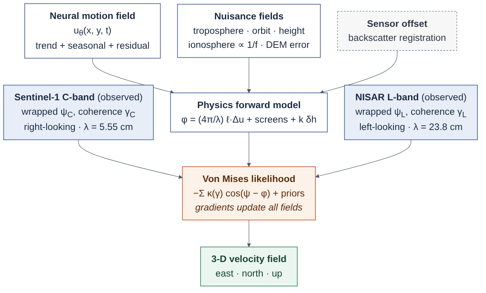
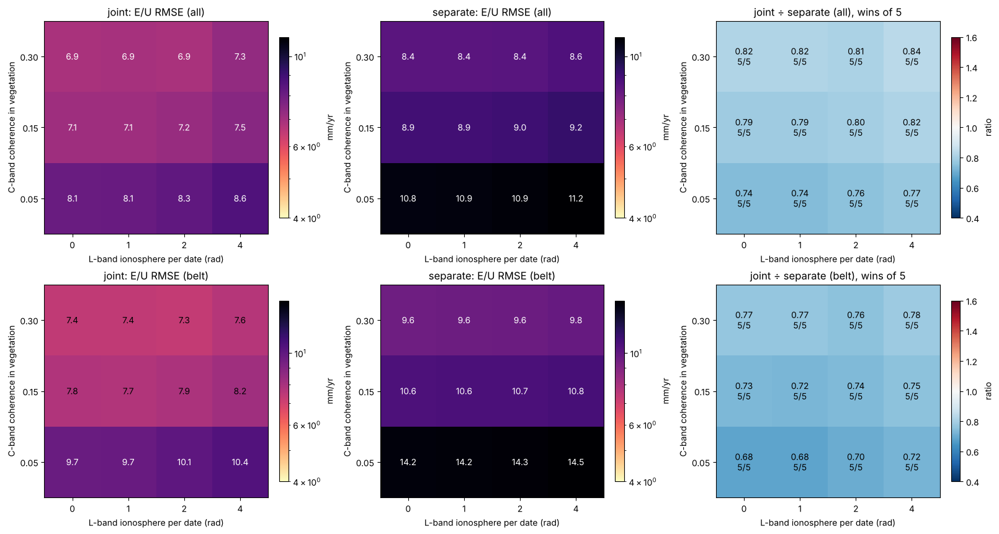
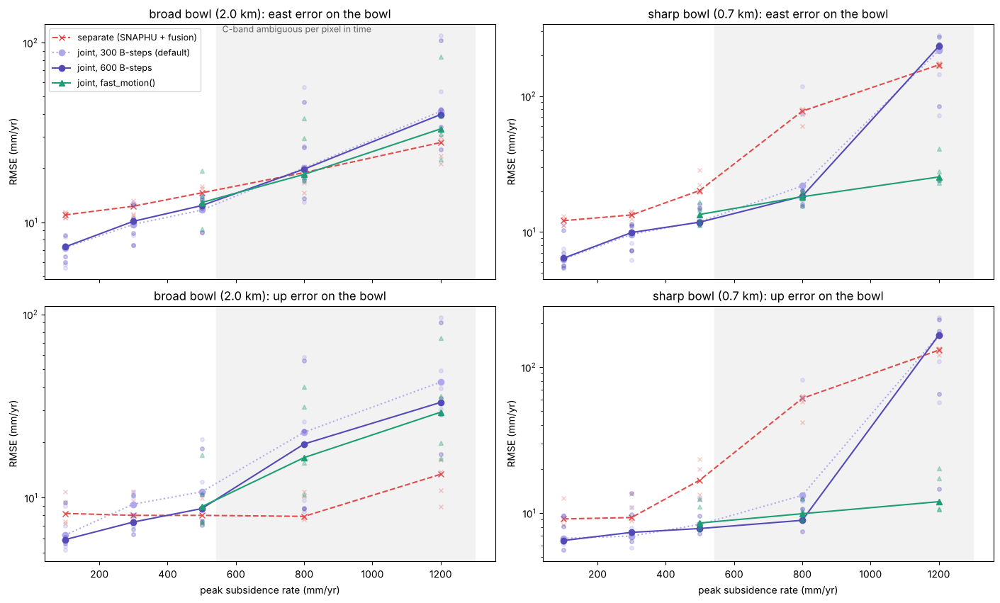
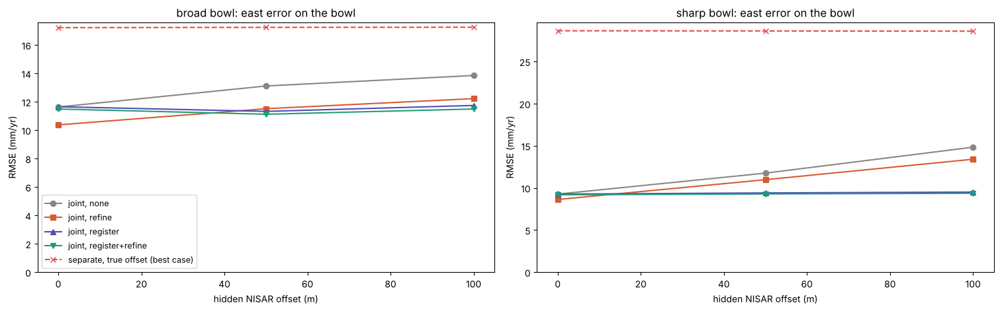
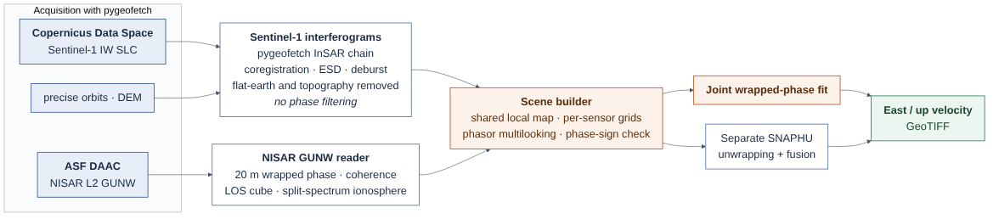

Project aim
Measure ground motion in the places where unwrapping fails, decorrelated vegetation and fast or sharply localised motion such as mining, landslides and subsiding cities, by combining Sentinel-1 C-band and NISAR L-band before any cycle is counted.
- 60 / 60Regime-map runs won against SNAPHU + fusion
- 13.1 → 9.0East error in decorrelated vegetation (mm/yr)
- 25 vs 170East error at 1.2 m/yr subsidence (mm/yr), 5 of 5 scenes
- ~1 mNISAR–Sentinel-1 offset from backscatter
Sentinel-1 and NISAR are still processed apart: each is unwrapped on its own and the results are fused at the end, mistakes included. PhysInSAR never unwraps. The coherent L-band phase and the precise C-band phase resolve the cycle ambiguities together, inside one model.
What is new
- 1
No unwrapping step
The observed phase enters only through a periodic von Mises likelihood whose concentration follows from bias-corrected coherence, so integer cycles are never estimated and cannot be wrong.
- 2
One motion model for two wavelengths
A Fourier-feature neural field gives continuous 3-D motion (trend, seasonal and residual terms); both sensors constrain it through their own line of sight and wavelength.
- 3
Nuisance fields that cannot steal motion
Per-date troposphere, ionosphere, orbit and height screens are projected out of the motion's temporal null space; the L-band ionosphere is anchored by NISAR's split-spectrum estimate.
- 4
Alignment from backscatter
The NISAR–Sentinel-1 offset is measured by correlating radar texture to about 1 m, because phase-only refinement drifts when two geometries cannot separate offset from motion.
- 5
A start-up for very fast motion
Beyond C-band's per-revisit limit (about 420 mm/yr along the line of sight) a dedicated start-up keeps the fit on the right C-band cycle; it fixed every failing case at 1.2 m/yr.
Overview
InSAR records motion only as a phase that repeats every half wavelength. With NISAR now observing the same ground as Sentinel-1 at a wavelength 4.3 times longer, a coherent but coarse L-band measurement sits next to a precise but fragile C-band one. PhysInSAR fits a single continuous model of three-dimensional ground motion in space and time, a neural field, directly to the wrapped phase of both sensors. A physics forward model predicts every interferogram from the motion projected onto each sensor's line of sight and wavelength, plus learned atmosphere, ionosphere and DEM-error fields, and a von Mises likelihood weighted by coherence compares prediction and observation. Because the likelihood is periodic, a prediction that is right modulo one cycle is right, and no unwrapping step exists.
The challenge
Each sensor alone is ambiguous where it matters: C-band loses coherence in vegetation within days and packs fringes too densely over fast motion, while L-band is coarse and carries strong ionospheric delay. Combining them requires a model that respects both geometries (Sentinel-1 looks right, NISAR left), keeps atmospheric fields from absorbing motion, and handles a geolocation offset between the two missions that, with only two viewing geometries, looks almost exactly like a motion pattern.
Data & inputs
Approach
-
01
Simulate paired stacks with ground truth
A Sentinel-1/NISAR simulator generates interferograms at single-look-complex level: speckle, a vegetated decorrelation belt, turbulent troposphere, L-band ionosphere, orbit and DEM errors, subsidence and volcanic sources.
-
02
Fit L-band first
Stage A fits the coherent, cycle-safe L-band phase alone; stage B adds C-band to sharpen the estimate, with spatial bandwidth and screens growing coarse to fine.
-
03
Compare against standard practice
The baseline unwraps every interferogram of each sensor with SNAPHU, fits velocity and DEM error per pixel and fuses the two line-of-sight maps into east and up.
-
04
Stress-test the regimes
A 60-run regime map over ionosphere and C-band coherence, hidden geolocation offsets up to 100 m, subsidence rates from 100 to 1200 mm/yr, and a volcano with stratified troposphere.
-
05
Move to real data
NISAR GUNW products and Sentinel-1 SLCs are acquired with pygeofetch, put onto common map grids and inverted jointly; Mexico City is the first case study.
Model & training setup
| Motion model | Fourier-feature neural field (96 features, 3 × 128 MLP): velocity, 2 seasonal harmonics, 3 residual time modes |
|---|---|
| Likelihood | Von Mises, concentration from Touzi-debiased coherence; residual noise re-estimated by maximum likelihood |
| Nuisance | Per-date Fourier screens (troposphere, ionosphere, orbit, height) outside the motion's temporal null space; per-pixel DEM error |
| Ionosphere prior | NISAR split-spectrum estimate |
| Alignment | Backscatter cross-correlation with bicubic resampling and sub-pixel peak fit |
| Optimisation | Adam; stage A L-band 200 steps, stage B joint 300 (600 for fast motion); 4096 pixels per sensor per step |
| Benchmark scene | C-band 160 × 160 at 120 m, L-band 127 × 127 at 150 m; one year |
| Baseline | SNAPHU per interferogram, per-pixel velocity + DEM fit, east/up fusion |
| Software | PyTorch package with 115 tests; readers for NISAR GUNW and pygeofetch Sentinel-1 interferograms |
Benchmark
| Condition | PhysInSAR | SNAPHU + fusion | PhysInSAR better |
|---|---|---|---|
| Vegetated belt, C-band coherence 0.05 | 9.8 / 10.1 | 16.1 / 12.2 | 20 / 20 runs |
| Vegetated belt, all conditions | 9.0 / 7.7 | 13.1 / 9.7 | 60 / 60 runs |
| Sharp 700 m bowl, 800 mm/yr | 18.2 / 9.9 | 77.4 / 61.0 | 5 / 5 scenes |
| Sharp 700 m bowl, 1200 mm/yr | 25.4 / 11.9 | 169.6 / 130.6 | 5 / 5 scenes |
| Broad 2 km bowl, 1200 mm/yr | 33.1 / 29.2 | 27.8 / 13.4 | 1 / 5 scenes |
Figures from the run





Results
Across a regime map of four ionosphere levels, three C-band coherence levels and five random scenes, PhysInSAR had a lower error than SNAPHU-based separate unwrapping in all 60 runs, including where C-band stayed coherent; in decorrelated vegetation east and up errors fell from 13.1 and 9.7 to 9.0 and 7.7 mm/yr. On a sharp 700 m subsidence bowl it stayed accurate in every scene up to 1.2 m/yr, about 25 mm/yr east error against 170 for unwrapping. Backscatter registration recovered hidden offsets of up to 100 m to about 1 m and restored full accuracy.
Validation
Every experiment uses five random scenes per condition with full ground truth, a common reference area and errors reported over the whole scene, the vegetated belt or the deforming area. Results reproduce across machines for a given seed, and all scripts, seeds and result files are part of the DOI-archived release. The first real-data test with NISAR GUNW and Sentinel-1 over Mexico City is under way.
Limitations, stated plainly
- All results so far are synthetic, from a simulator that shares the model's physics, so the margins are an upper bound until confirmed on real data.
- On broad, very fast motion (about 800 mm/yr and more over a 2 km bowl) spatial unwrapping keeps up and gives the better vertical component.
- Strongly stratified troposphere over high relief is not yet handled by default.
- C-band-only and L-band-only ablations are still needed to separate the gain from combining wavelengths from the gain from avoiding unwrapping.